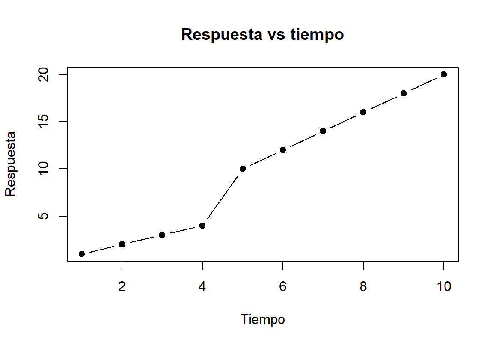
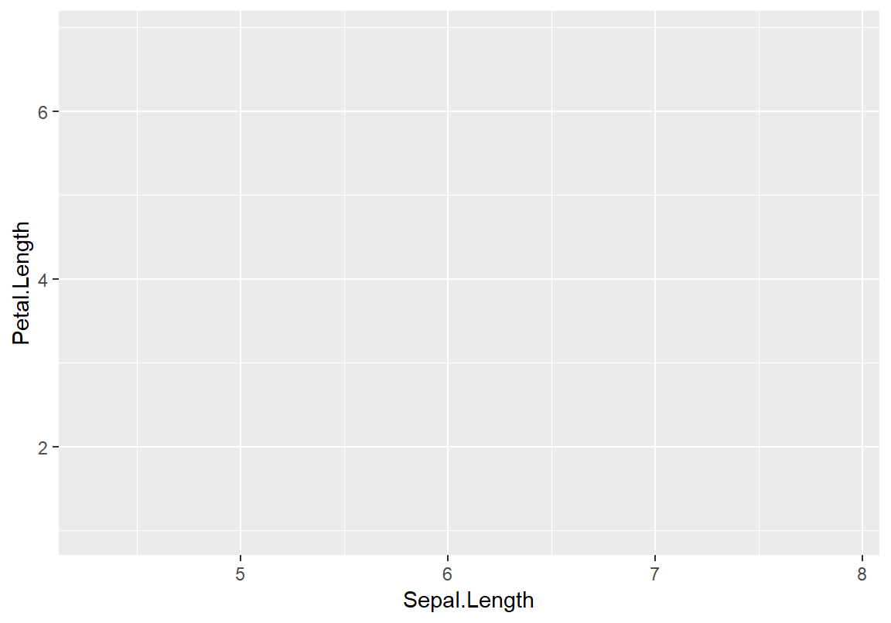
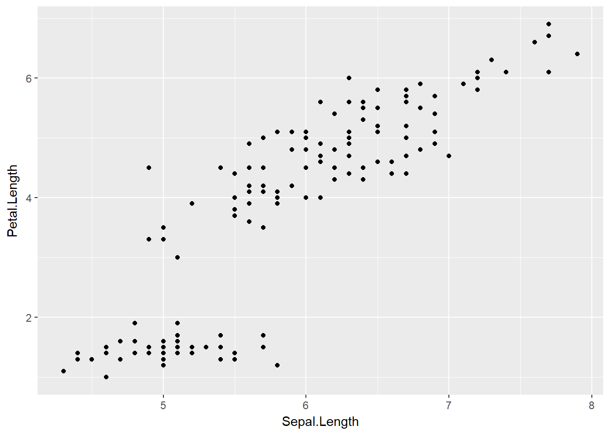
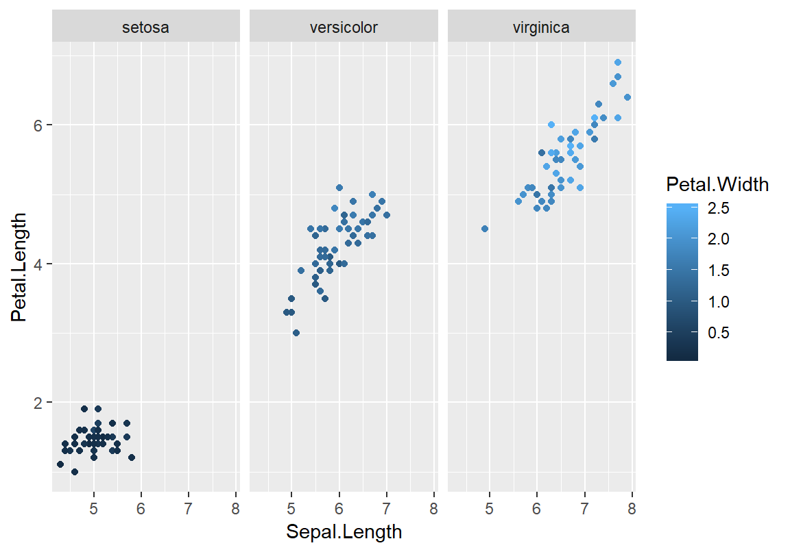
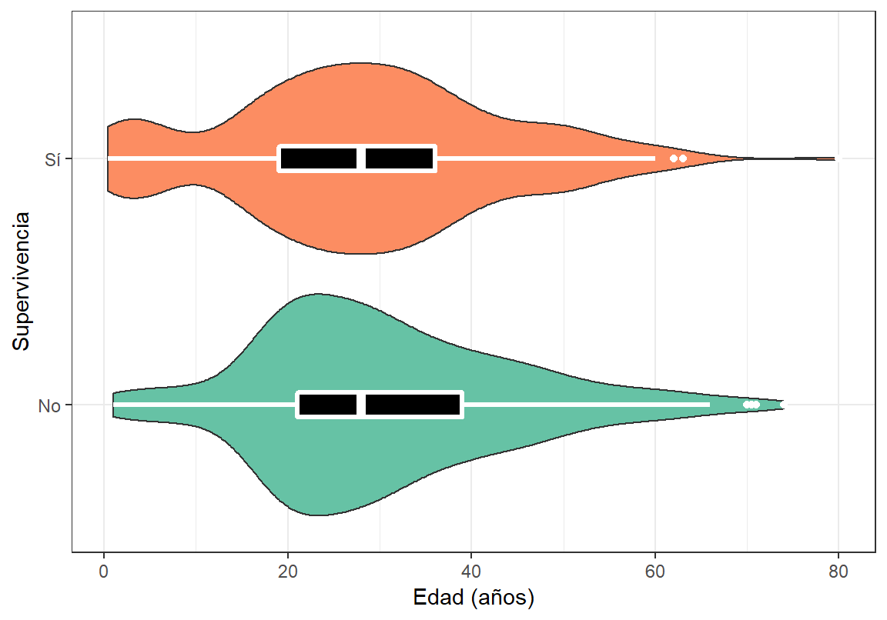
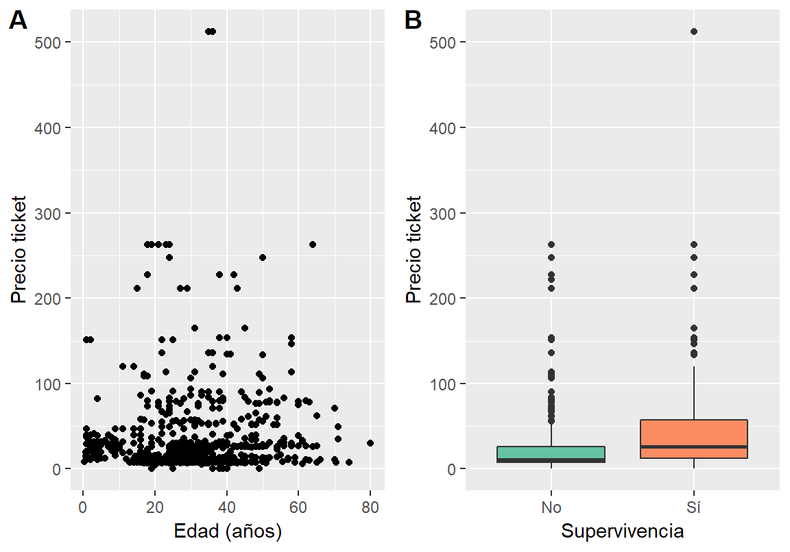
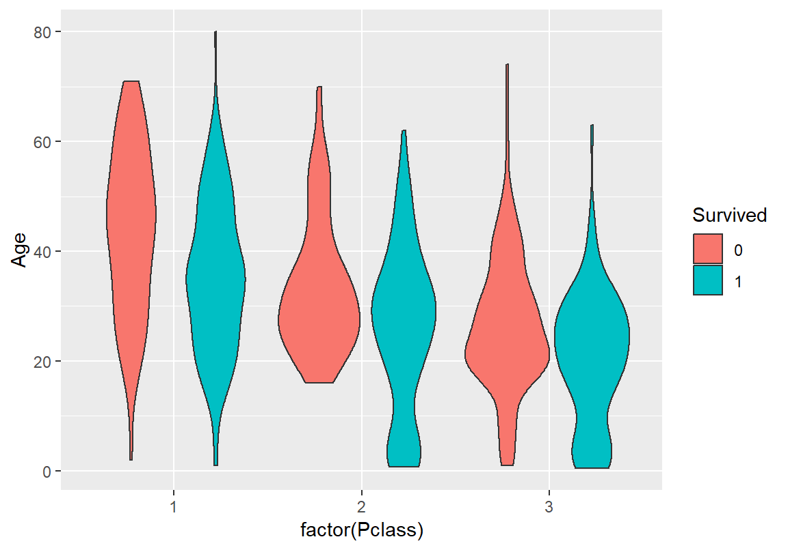

Capítulo 4 Exploración de Datos
Los humanos somos animales fuertemente dependientes en nuestra visión, así hemos evolucionado. Por lo tanto, no es sorpendente que la herramienta más útil para comprender datos sea utilizar una gráfica. El análisis exploratorio es una de las prácticas más comunes para entender un set de datos y permite generar preguntas más complejas, que sólo se hacen evidentes al observar ciertos patrones en las visualizaciones exploratorias.
4.1 Gráficos de base
R posee funcionalidad gráfica de base. Con relativa facilidad podemos hacer una gráfica de dos variables (por ejemplo, una hipotética variable respuesta en el tiempo).
tiempo <- c(1:10)
respuesta <- c(1:4, seq(10, 20, 2))
plot(tiempo,respuesta,
type='b',
pch=19,
col="black",
main = "Respuesta vs tiempo",
ylab = "Respuesta",
xlab = "Tiempo")
Esta funcionalidad no está limitada a gráficos de puntos y líneas. Por ejemplo, el histograma que figura en el principio del libro fue realizado con la función hist()
set.seed(123)
ejemplo <- rnorm(n = 10000, mean = 0, sd = 1)
hist(ejemplo, col='orange', breaks=40,
ylab = "Frecuencia", main = "Histograma ejemplo")
Los gráficos de base son geniales para explorar modelos ya que aceptan objetos de tipo lm (ver siguientes capítulos). Si bien es posible realizar gráficos muy bonitos con la funcionalidad de base, incluso gráficas de calidad para publicación impresa, es cierto que la gramática no es sencilla de recordar (o requiere demasiada previsión) y, en muchos casos, es limitada.
4.2 ggplot2
Una forma más intuitiva de construir gráficas es utilizar capas. El paquete ggplot2 pertenece al tidyverse y es el más utilizado para realizar gráficas de alta calidad en R.
El paquete se basa en una gramática de gráficos que puede ser entendida a partir de entender sus componentes8:
- Data es aquél dataset que vamos a graficar, con toda la información pertinente para realizar el gráfico.
- geoms son representaciones para dibujar gráficos (puntos, líneas, cajas, entre otros).
- Stats son aquellas transformaciones estadísticas que le hagamos a los datos. Nos ayudan a hacer un resumen del dataset para visualizar mejor (por ejemplo, la media o la mediana son estadísticas de tendencia central).
- Scales nos ayudan a colorear (o escalar) la data según distintas variables. Dibujan los ejes y las leyendas.
- Coordinate Systems describe how geoms are mapped to the plane of the graphic.
- Facets nos permiten partir el dataset según factores para graficar en viñetas separadas.
- Themes son conjuntos de especificaciones gráficas que permiten controlar la apariencia general de todos los elementos que no son data (por ejemplo, el color del fondo o el ancho de los ejes).
A lo largo de la explicación utilizaré el dataset iris, que contiene medidas de las ojas de tres especies de plantas:
Sepal.Length Sepal.Width Petal.Length Petal.Width Species
1 5.1 3.5 1.4 0.2 setosa
2 4.9 3.0 1.4 0.2 setosa
3 4.7 3.2 1.3 0.2 setosa
4 4.6 3.1 1.5 0.2 setosa
5 5.0 3.6 1.4 0.2 setosa
6 5.4 3.9 1.7 0.4 setosaVeamos cómo se construye capa por capa un gráfico utilizando ggplot2 y los datos de iris. Para entender cómo funciona, es importante entender el argumento aes(), que permite indicar qué pondremos en los ejes y además permite agregar distintas capas extra. Veamos el ejemplo:

Este gráfico contiene los ejes que especificamos pero no contiene los datos. Para dibujarlos, debemos decirle a ggplot cómo hacerlo (por ejemplo, puntos).
Figure 4.1: Gráfico de puntos usando ggplot2.
Al parecer, los datos presentan una estructura de asociación entre el largo de los sépalos y el de los pétalos (a mayor largo de sépalos, mayor largo de pétalos). Este dataset contiene un factor Species con tres niveles, setosa, versicolor, virginica. Fácilmente podemos ver si las distintas especies presentan distintas asociaciones. Una forma rápida de visualizarlo es coloreando los puntos según el nivel del factor Species. En ggplot2 usamos color = Species.
Figure 4.2: Gráfico de puntos con ggplot2, coloreado seguún especie en el dataset iris.
Podemos agregar una nueva capa con una línea de tendencia. Para hacerlo, especificamos un ajuste lineal (“lm”) en geom_smooth(method = "lm"). Es clave notar que geom_smooth() posee distintos métodos cuya riqueza exploraremos en los siguientes capítulos9.
ggplot(iris, aes(Sepal.Length, Petal.Length, color = Species)) +
geom_point() +
geom_smooth(method = "lm")
Figure 4.3: Gráfico de puntos coloreado por especie Líneas de tendencia para un ajuste lineal según la especie.
Como pueden apreciar, incorporar la gramática de ggplot2 permite realizar visualizaciones más complejas con menor esfuerzo. La riqueza de este grupo de funciones esta en la gran variedad de funciones geom que podemos incorporar. A lo largo de el libro veremos varias de ellas.
4.2.1 Entendiendo aes()
En ggplot, aes() hace referencia al contenido estético del gráfico (del ingles aesthetics). Es decir, la función le dará indicios a ggplot2 sobre cómo dibujar los distintos trazos, formas, colores y tamaños. Es importante notar que aes() crea una nueva capa en relación a las variables y agrega leyendas a los gráficos. Al incorporar aes() al llamado de ggplot() estamos compartiendo la información en todas las capas. Si deseamos que esa información sólo esté en una de las capas, debemos usar aes() en la capa correspondiente. Esto puede parecer confuso. Exploremos las siguientes líneas de código para entender por qué generan un gráfico que se ve idéntico al que realizamos en la Figura 4.2.
ggplot(iris, aes(Sepal.Length, Petal.Length)) +
geom_point(aes(color = Species)) # Notar diferencia! aes() aparece en geom_point()
A simple vista es imposible diferenciar ambas figuras. Sin embargo, podemos ver la diferencia al intentar repetir el gráfico de la Figura 4.3 con línea de tendencia.
ggplot(iris, aes(Sepal.Length, Petal.Length)) +
geom_point(aes(color = Species))+
geom_smooth(method="lm")Figure 4.4: Gráfico de puntos coloreados según especie. Línea de tendencia para un ajuste global.
En este caso geom_smooth() no recibe la orden de agrupar según Species, por ende, todos los datos son usados para construir el ajuste lineal. Este comportamiento nos permite gran versatilidad en los gráficos. Sin embargo, también permite que el usuario cometa algunos errores. Por ejemplo, intentemos cambiar todos los puntos de la Figura 4.1 de negro a magenta:
# Primer gráfico, izquierda
ggplot(iris, aes(Sepal.Length, Petal.Length)) +
geom_point()
# Intento 1
ggplot(iris, aes(Sepal.Length, Petal.Length, color='magenta')) +
geom_point()
# Intento 2
ggplot(iris, aes(Sepal.Length, Petal.Length)) +
geom_point(color='magenta')Figure 4.5: Gráficos de puntos con ggplot2. Intentamos cambiar los puntos de negro a magenta.
4.2.2 Explorando geom
Los distintas funciones geom nos permiten obtener resultados gráficos distintos, aunque utilicemos los mismos datos. Analicemos el largo de los sépalos por especie.
# Gráfico de puntos
p1 <- ggplot(iris, aes(Species, Sepal.Length)) +
geom_point()
# Gráfico de puntos con ruido en el eje horizontal
p2 <- ggplot(iris, aes(Species, Sepal.Length)) +
geom_jitter(width = 0.1)
# Boxplot
p3 <- ggplot(iris, aes(Species, Sepal.Length)) +
geom_boxplot()
# Violin
p4 <- ggplot(iris, aes(Species, Sepal.Length)) +
geom_violin()
# Combinando boxplot y violin
p5 <- ggplot(iris, aes(Species, Sepal.Length)) +
geom_violin(fill='orange', alpha=0.5)+
geom_boxplot(color="white", fill="black",
lwd=0.8, width=0.2 )
# Grafico de barras con medias + SEM
p6 <- ggplot(iris, aes(Species, Sepal.Length)) +
stat_summary(fun.y = mean, geom = "bar",
width=0.5) +
stat_summary(fun.data = mean_se, geom = "errorbar",
color="red", width=0.5)Figure 4.6: Varias formas de mostrar los mismos datos.
Este es un pequeño ejemplo de cómo los distintos geoms participan en la creación de gráficos. En A es difícil ver que los puntos están superpuestos, por eso en B usamos geom_jitter(), que da una buena idea de la distribución de los datos. Para resumir la información, es común utilizar gráficos de cajas o tipo violín (C,D). Notar que la combinación de geoms en capas permite fácilmente mezclar ambos gráficos (E). Al combinarlos, hemos cambiado cuestiones estéticas dentro de las capas para incrementar el contraste. Finalmente, otra forma común de hacer un resumen de datos es un gráfico de barras de tipo media ± SEM (E).
4.2.3 Explorando facet_wrap
En otras secciones separamos datos categóricos utilizando color. En esta sección, veremos que es posible utilizar facets para separar las gráficas en distintas ventanas o viñetas.
Figure 4.7: Gráfico de puntos separado por la variable Species en viñetas.
Este comportamiento es súmamente útil cuando tenemos más de una variable categórica o cuando deseamos utilizar el color para simbolizar otra variable. Por ejemplo, quizás nos interesa evaluar cómo varía el ancho de los pétalos en las distintas plantas.
ggplot(iris, aes(Sepal.Length, Petal.Length)) +
geom_point(aes(color=Petal.Width))+
facet_wrap(~Species)
En este último gráfico hemos podido representar con claridad variaciones en la longitud de pétalos y sépalos, el ancho de los pétalos y una variable categórica de tres niveles. Los datos indican que las plantas con menor longitud de pétalos y sépalos también poseen pétalos más angostos. Efectivamente, explotar los recursos de ggplot2 nos permite generar poderosas herramientas de análisis y comunicación estadística.
4.3 Caso de estudio
El primer objetivo de un análisis exploratorio debe ser ganar entendimiento cualitativo de la naturaleza de los datos (tendencia central, distribución y estructura de correlación). Esto puede lograrse utilizando tablas de resumen, sin embargo, en mi opinión el análisis gráfico es superior.
En este caso voy a mostrar un análisis exploratorio del dataset de Titanic, que puede ser obtenido desde CRAN.
El dataset contiene información sobre el destino de los pasajeros del barco. Carguemos los paquetes necesarios para trabajar.
# Paquete útil para reorganizar datos (parte de tidyverse)
library(dplyr)
# Cargamos el paquete titanic
library(titanic)Vamos a trabajar con el dataset llamado titanic_train. En este caso es útil conocer a las variables que estaremos manejando. Puedes acceder al nombre de las variables con el comando names(titanic_train). Aquí hay una tabla con las descripciones de las variables.
| Variable Inglés | Descr. Español | Tipo de variable | Valores |
|---|---|---|---|
| survival | Supervicencia | dicotómica | no, si (0, 1) |
| pclass | Clase | factor | 1, 2, 3 |
| sex | Sexo | continua | 0+ |
| Age | Edad en años | continua | 0+ |
| sibsp | # de hermanos o esposas a bordo | continua | 0+ |
| parch | # padres a bordo | continua | 0+ |
| ticket | Número de ticket | caracter | [A-Z][0-9] |
| fare | Valor del ticket | continua | 0+ |
| cabin | Número de cabina | caracter | [A-Z][0-9] |
| embarked | Puerto en donde embarcaron | factor | Cherbourg (C), Queenstown (Q), Southampton (S) |
Podemos utilizar la función str() para obtener una descripción rápida del tipo de datos que tenemos. Podemos ver que el dataset no necesariamente contiene las variables en las clases que queremos (por ejemplo, algunos factores están como character).
'data.frame': 891 obs. of 12 variables:
$ PassengerId: int 1 2 3 4 5 6 7 8 9 10 ...
$ Survived : int 0 1 1 1 0 0 0 0 1 1 ...
$ Pclass : int 3 1 3 1 3 3 1 3 3 2 ...
$ Name : chr "Braund, Mr. Owen Harris" "Cumings, Mrs. John Bradley (Florence Briggs Thayer)" "Heikkinen, Miss. Laina" "Futrelle, Mrs. Jacques Heath (Lily May Peel)" ...
$ Sex : chr "male" "female" "female" "female" ...
$ Age : num 22 38 26 35 35 NA 54 2 27 14 ...
$ SibSp : int 1 1 0 1 0 0 0 3 0 1 ...
$ Parch : int 0 0 0 0 0 0 0 1 2 0 ...
$ Ticket : chr "A/5 21171" "PC 17599" "STON/O2. 3101282" "113803" ...
$ Fare : num 7.25 71.28 7.92 53.1 8.05 ...
$ Cabin : chr "" "C85" "" "C123" ...
$ Embarked : chr "S" "C" "S" "S" ...Cambiemos un par de cosas.
# Transformamos en factor
titanic_train$Survived <- factor(titanic_train$Survived)
# Transforamamos al castellano
titanic_train$Sex <- ifelse(titanic_train$Sex == "male",
"hombre",
"mujer")
# Transformamos una varibale con valor "" a NA
titanic_train$Embarked <- ifelse(titanic_train$Embarked == "",
NA,
titanic_train$Embarked)Ahora sí, empecemos a entender el dataset gráficamente, una variable a la vez. Cada visualización responde a una pregunta respecto de la variable en cuestión. Las preguntas que nos hacemos para este dataset son:
- Supervivencia: ¿Cuál fue el número de sobrevivientes?
- Clase: ¿Cuál fue la cantidad de pasajeros en cada clase?
- Sexo: ¿Cuántos hombres y mujeres a bordo?
- Embarque: ¿Dónde (en qué puerto) subió la gente al barco?
- Edad: ¿Cuál era la distribución de edades de los pasajeros?
- Precio: ¿Cuánto costaba subir al Titanic?
Empecemos por la primera. Podemos obtener el número de sobrevivientes usando la función count del paquete dplyr y hacer un gráfico de barras usando geom_bar de ggplot2.
# Calculamos la supervivencia segun el factor Survived
sobrev <- titanic_train %>%
group_by(Survived) %>%
count()
# Supervivencia
# Cuál es el número de sobrevivientes?
g1 <- ggplot(titanic_train, aes(Survived)) +
geom_bar()+
# Agregamos la cuenta de sobrevivientes
# Notar que debemos utilizar otro data.frame en data
# vamos a utilizar y=20 para posicionar los n cerca del eje x
geom_text(data = sobrev,
aes(Survived, y=25, label=n),
color="white")+
xlab("Supervivencia")+
ylab("Frecuencia")Ejercicio: Propongo detener la lectura y evaluar qué tipo de gráfico podríamos hacer para responder el resto de las preguntas.
A continuación presento una de las opciónes del análisis gráfico univariado para las variables del dataset Titanic.
Figure 4.8: Gráficos de exploración univariada del dataset Titanic.
Los gráficos de la Figura 4.8 son bastante típicos. Si deseas ver detalle por detalle el código, puedes dirigirte al Anexo de este capítulo 5. En esta sección concentro nuestros esfuerzos en la visualización veloz de los datos. Es posible hacer gráficos que comuniquen a un público más general, por eso en el futuro retomaremos desde este punto (ver Sección 9.2).
Ahora que tenemos información sobre las variables del dataset por separado podemos preguntarnos cómo se relacionan entre ellas. En la figura 4.9 podemos apreciar claramente que las mayor supervivencia se dio en las mujeres, y luego en las clases altas, siendo “hombre en tercera clase” la peor combinación.
ggplot(titanic_train,
aes(Sex, Survived))+
# Coloreamos segun la interaccion entre los niveles de interes
geom_jitter(aes(color=interaction(factor(Sex), Survived)),
alpha=0.5)+
# Separamos por clase
facet_wrap(~Pclass)+
# Nombramos al eje
ylab("Supervivencia")+
# Agregamos un eje y descriptivo
scale_y_discrete(breaks=c("0","1"),
labels=c("No", "Sí"))+
# Sacamos la leyenda
theme(legend.position = "none")+
# mejoramos los colores
scale_color_brewer(palette = "Set2")+
# Titulo
ggtitle("Supervivencia por clase")Figure 4.9: Supervivencia en el Titanic según género y clase.
Ejercicio: Completar el siguiente trozo de código para calcular % sobrevivientes
# Calcular el porcentaje segun la clase
titanic_train %>%
# Agrupar por clase y sexo
group_by(...) %>%
# contar los sobrevivientes
... %>%
# sumar el total de casos
# dividir por el total y expresar en porcentaje
mutate(total= ...,
porcentaje=.../total*100) También podemos explorar cómo se relaciona la edad con la supervivencia. En el siguiente gráfico vemos que prácticamente no hay diferencias en supervivencia según las edades (quizás sí existen pequeñas diferencias para los niños menores de 10 años).
ggplot(titanic_train,
aes(Survived, Age, fill=Survived))+
geom_violin()+
geom_boxplot(fill="black", color="white",
lwd=1.1, width=0.1)+
theme_bw()+
scale_fill_brewer(palette = "Set2")+
theme(legend.position = "none")+
xlab("Supervivencia")+
ylab("Edad (años)")+
scale_x_discrete(breaks=c("0","1"),
labels=c("No", "Sí"))+
# Rotamos los ejes!
coord_flip()
Ejercicio: Analizar sobrevivientes vs edad (por clase)
# La base de este gráfico es la misma que la del anterior
# Debemos cambiar el x a Pclass
# (cuidado, necesitamos que Pclass sea un factor). Como queda el fill?
ggplot(titanic_train,
aes(x= ..., Age, fill=...))+
# Resto de los componentes?Veamos algunos componentes relacionados con el precio de los tickets. En general, podemos ver que, independientemente de la edad, el precio estaba por debajo de 50, con algunas notables excepciones en cero o por encima de 500 (A)!. También podemos ver que aquellos que pagaron más parecieran haber estado en el grupo de los sobrevivientes (B).
# Edad vs Precio ticket
p1 <- ggplot(titanic_train, aes(Age, Fare)) +
geom_point()+
xlab("Edad (años)")+
ylab("Precio ticket")
p2 <- ggplot(titanic_train, aes(Survived, Fare)) +
geom_boxplot(aes(fill=Survived))+
xlab("Supervivencia")+
ylab("Precio ticket")+
scale_x_discrete(breaks=c("0","1"),
labels=c("No", "Sí"))+
theme(legend.position = "none")+
scale_fill_brewer(palette = "Set2")
# todo junto!
cowplot::plot_grid(p1,p2, labels="AUTO")
4.4 Resumen
En este capítulo no he realizando una descripción exhaustiva sobre análisis gráfico, mi idea fue brindar ejemplos de las posibilidades para exploración de datos, principalmente con ggplot2.
- Uno de los mayores beneficios de R es la plataforma gráfica, principalmente
ggplot2. ggplot2está basada en una gramática que permite incorporar capas a los gráficos.- Las capas son agregadas una encima de la otra segun los
aes()ygeomsque se utilicen. - Tanto
ggplot2como paquetes accesorios permiten realizar gráficos de paneles de alta calidad. - Utilizar combinaciones de capas permite representar con claridad más dimensiones en un gráfico.
4.5 Recursos
El material sobre visualización de datos es virtualmente infinito. Recomiendo fuertemente los siguientes textos:
4.6 Respuestas
# Calculando el porcentaje de sobrevivientes por clase y sexo
titanic_train %>%
group_by(Pclass, Sex) %>%
count(Survived) %>%
mutate(total=sum(n),
porcentaje=n/total*100)# A tibble: 12 x 6
# Groups: Pclass, Sex [6]
Pclass Sex Survived n total porcentaje
<int> <chr> <fct> <int> <int> <dbl>
1 1 hombre 0 77 122 63.1
2 1 hombre 1 45 122 36.9
3 1 mujer 0 3 94 3.19
4 1 mujer 1 91 94 96.8
5 2 hombre 0 91 108 84.3
6 2 hombre 1 17 108 15.7
7 2 mujer 0 6 76 7.89
8 2 mujer 1 70 76 92.1
9 3 hombre 0 300 347 86.5
10 3 hombre 1 47 347 13.5
11 3 mujer 0 72 144 50.0
12 3 mujer 1 72 144 50.0 # La base de este gráfico es la misma que la del anterior
# Debemos cambiar el x a Pclass
# (cuidado, necesitamos que Pclass sea un factor). Como queda el fill?
ggplot(titanic_train,
aes(x= factor(Pclass), Age, fill=Survived))+
# Resto de los componentes?
# (la principal es geom_violin(), el resto es estético)
geom_violin()